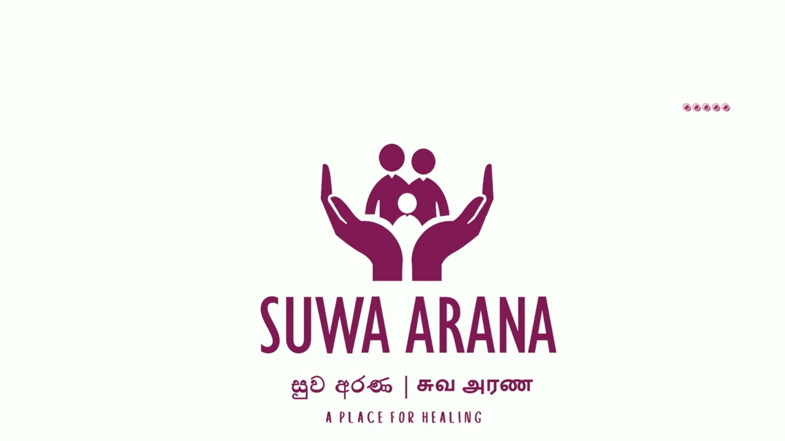
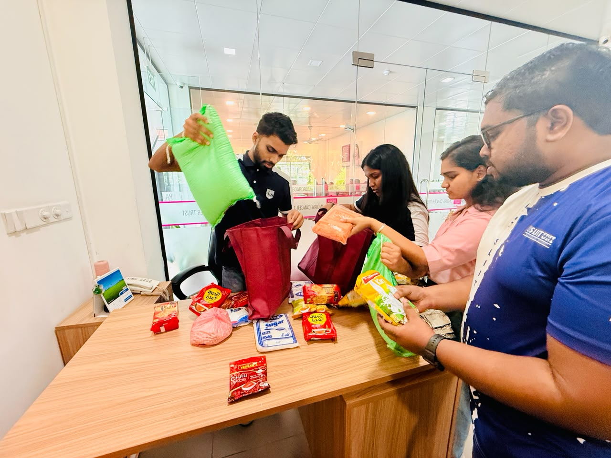
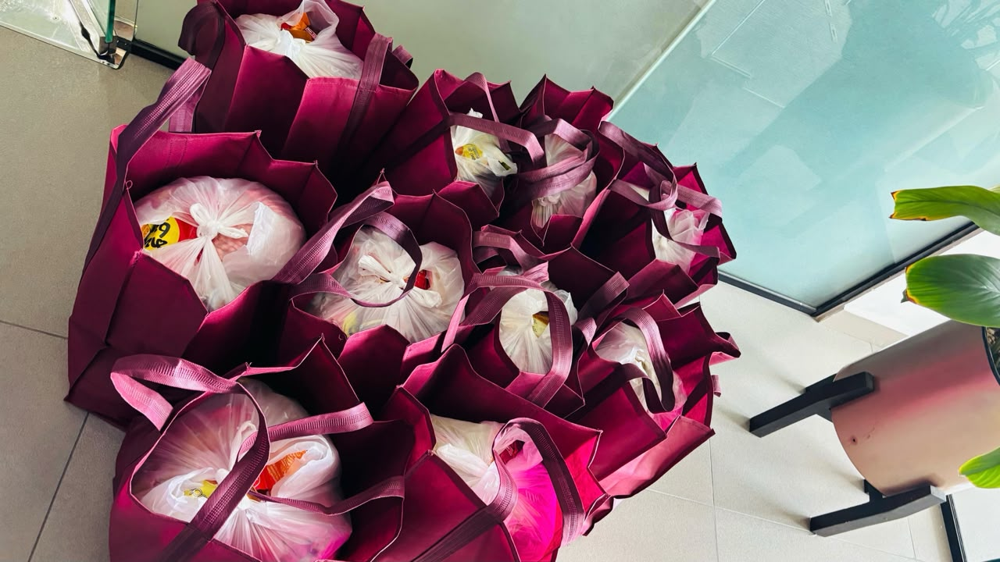

Our Group 14 charity project donating dry ration packs to cancer patients and their families at Indira Cancer Trust, Maharagama and what this experience taught me about empathy, teamwork, and professional growth.

The Indira Cancer Trust is a well-recognised non profit organisation in Sri Lanka that provides comprehensive support to cancer patients and their families. It was established in 2016 by Hon. Karu Jayasuriya in memory of his daughter, Indira Jayasuriya, who passed away from breast cancer at age 40.
Its flagship project, "Suwa Arana A Place for Healing," is Sri Lanka's first paediatric palliative care centre. It provides free accommodation, meals, counselling, and emotional support for children undergoing cancer treatment and their low-income families who travel from distant areas a true "home away from home."
Main objective: To support low income families and palliative cancer patients by providing essential dry ration packs to reduce their financial burden during treatment.
Other objectives:
Our team conducted an initial visit to the Indira Cancer Trust on February 13, 2026. Ms. Priyani, the facility counsellor, guided us through all seven floors of the Suwa Arana building and explained how patients and their families live during treatment.
The facility provides study areas, relaxation spaces, a playroom for children, and shared accommodation designed to support families far from home. Through this visit, we identified that many families struggle to meet daily food needs due to high medical costs. This led us to decide on providing essential dry ration packs as our practical contribution.
Each of the 11 group members contributed a minimum of Rs. 3,000, with additional voluntary contributions, totalling Rs. 50,000 sufficient to prepare 10 complete dry ration packs at Rs. 5,000 per pack.
Dry Ration Pack Contents (Per Pack — Rs. 5,000)
| Item | Quantity | Price |
|---|---|---|
| Rice | 5 kg | Rs. 1,300 |
| Sugar | 1 kg | Rs. 245 |
| Tea Leaves | 200 g | Rs. 420 |
| Milk Powder | 400 g | Rs. 1,150 |
| Noodles | 1 large pack | Rs. 250 |
| Wheat Flour | 1 kg | Rs. 245 |
| Dhal | 1 kg | Rs. 300 |
| Chickpeas | 1 kg | Rs. 380 |
| Cream Crackers | 250 g | Rs. 240 |
| Curry Powder | 100 g | Rs. 190 |
| Chilli Powder | 100 g | Rs. 170 |
| Salt | 100 g | Rs. 110 |
| Total per pack | Rs. 5,000 | |

📦 Packing Process PhotoGroup members packing dry ration items at the Indira Cancer Trust facility

🎁 Completed Ration Packs10 completed dry ration packs ready for distribution to beneficiary families
Photos from the actual donation day — April 7, 2026, at Indira Cancer Trust, Maharagama
This charity project was the most meaningful part of the course. It helped me understand that empathy, teamwork, communication, professionalism, and social responsibility are essential qualities in both personal and professional life.
I leave this course with not only new knowledge but also a stronger commitment to making a positive difference wherever I work.